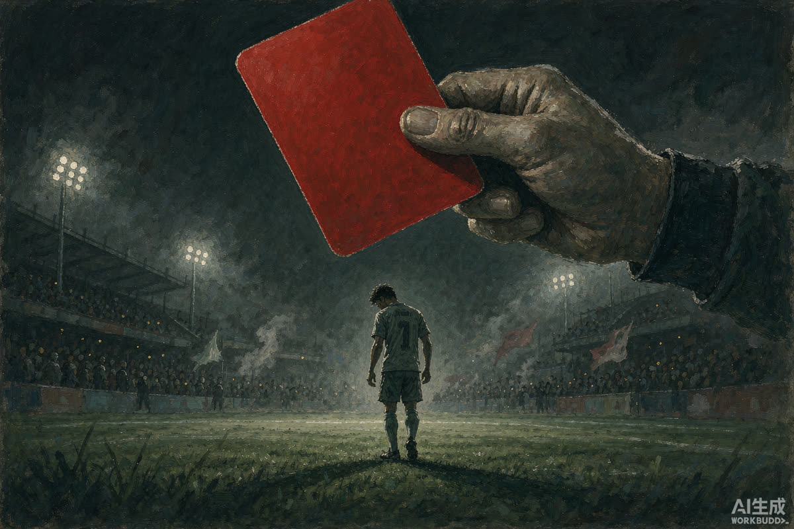

讨「姆巴佩」檄
吃中国人的饭，砸中国人的碗——其罪有三，其心可诛。天赋越盛，其罪越重；道歉越快，其诚越假。
盖闻 2026 年 10 月 26 日，西甲国家德比终场哨响，皇马前锋姆巴佩于赛后采访之中，就"最喜欢的表情包"一问，抛出涉华不当言论，一夜之间举网震怒。中国球迷为其熬夜观赛、为其周边买单、为其代言掏钱包，换来的却是公开场合的一记背刺。是可忍，孰不可忍！今数其罪，张榜公之于众，凡我网民，皆可鸣鼓而攻之。
罪状一 ｜ 吃中国人饭，砸中国人碗
这些年，姆巴佩在中国市场赚得盆满钵满：饮料品牌今年 4 月刚官宣其为代言人，蒙牛、妙可蓝多等国民品牌争相合作，无数球迷为他的比赛熬到凌晨三点。结果 10 月 26 日赛后采访，他转头就抛出涉华言论——原话为何，本檄不引不译：国内头部平台懂球帝已公开声明拒绝翻译、拒绝传播，本檄同守此约，只记其行，不传其言。端起碗吃中国人的饭，放下碗砸中国人的锅，此为一罪。
吃相难看！罪状二 ｜ 双标成性：受人恩惠，转眼忘恩
今年 7 月世界杯期间，姆巴佩遭遇种族歧视言论，当场黑脸，法国足协连发声明痛斥"令人发指"——彼时为他声援的，恰恰包括中国球迷。彼时他深知被羞辱的痛楚，彼时全世界的正义都站在他那边。仅仅三个月后，这位"受害者"转身就把同样的伤害砸向别人。受人之护，反辱其人，双标至此，此为二罪。
岂有此理！罪状三 ｜ 道歉走过场，俱乐部当鸵鸟
舆论引爆后，姆巴佩发了中、英、法三语道歉声明，称"无意冒犯"——可他的个人社媒上，只剩国家德比的庆祝内容，仿佛无事发生。更诛心的是这套组合拳的熟练度：西甲联盟火速致歉并把锅裁成"球员个人行为"，皇马俱乐部至今没有单独正式道歉、没有处罚方案。这不是第一次——今年 2 月皇马后卫赫伊森转发涉华歧视内容，道歉只发在中文微博，被球迷痛批"微博特供式道歉"；2024 年 6 月皇马前主席之孙辱华唱歌，俱乐部定性"孤立行为"了事。一套公关模板用了三年，错了三人，改也没改，此为三罪。
该！
▲ 球场之上，红牌即逐出之令（檄文风 · 示意）
"没钱的时候身体当狗用，有钱之后脑子当狗用。"
传阅这句网民锐评，恰是本次风波的病理解剖：落魄时靠拼劲换前程，谦逊是筹码；暴富后名气当护身符，敬畏被清算。不是不懂尊重，是觉得不必尊重——
话说回正事。市场用行动给出了裁决书：不到 24 小时，东鹏饮料、蒙牛、妙可蓝多全部解约——东鹏那句"补水啦"合作甚至撑不过半年；央视频搜"姆巴佩"已无结果，咪咕下架进球视频；中国足协向皇马严正交涉，要求球员与俱乐部公开正式道歉。律师点破了底牌：代言合同里本就有"道德条款"，伤害民族感情，品牌解约合法合规，还能追偿违约金。
天赋可以赢得掌声，换不来蔑视底线的资格。红牌不必等裁判——十四亿人的市场，自会亮牌。
传檄天下 · 且看后续
其一 · 皇马是否给出单独正式道歉与实质处罚——沉默即态度，观望即纵容
其二 · 姆巴佩道歉之外有无行动：捐款、公益、实质性修复，还是发完声明照常营业
其三 · 西甲转播与商业合作的恢复进度——市场信任碎一次，修就不是一季的事
诸君以为此罪当不当诛？若他后续用行动证明悔改，你选原谅还是永久抵制？评论区敲鼓鸣冤，赞最高者，下期再补一张讨伐檄。
口径说明：事件与解约信息以各品牌官方声明及公开报道为准（截至 2026.10.28）；涉华不当言论原话本檄不引不译；罪状皆据公开事实，吐槽仅代表本栏目立场；骂事不骂人，檄文纯为评论体裁，请勿对号入座。